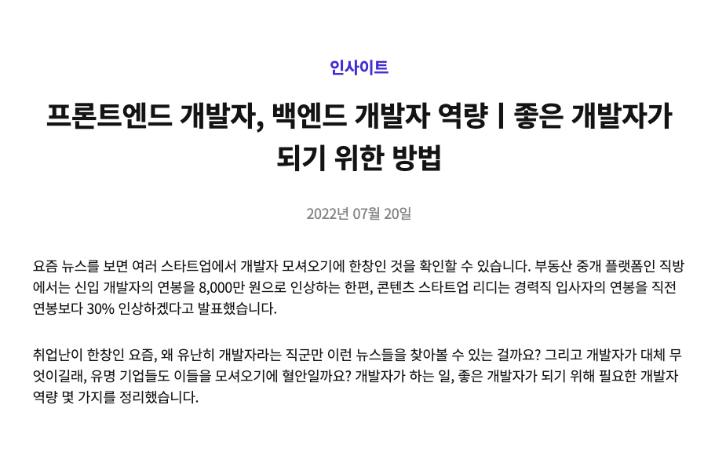
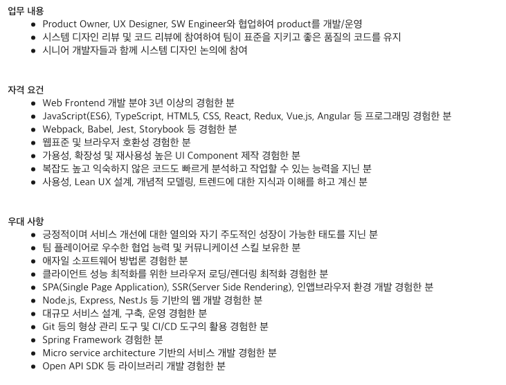

COMPETENCY

직업적 특징
: 끊임없이 공부해야 하는 직업
- IT 기술의 성장 속도에 맞추어 코드를 주기적으로 업데이트하고 관리해야
함.
기업이 필요로 하는 개발자 역량
1. 커뮤니케이션 능력
협업을 베이스로 일하기 때문에 팀원들과의 원활한 커뮤니케이션 능력이
중요하다.
특히, 디자이너 또는 마케터와 같은 개발자 이외의 직군과
소통할 땐 개발용어를 지양하고 직관적인 비유를 통해 내 의견을 쉽게
이해시켜야 한다.
2. 문제해결능력
코드는 수단에 불과하다.
엘레베이터의 속도가 느려서 사람들이
답답함을 느낄 때 어떻게 해결할 것인가? 단순히 속도를 향상시킬 수도 있고,
엘레베이터 앞에 거울을 두어 지루함을 느끼지 않게 만들 수도 있다. 특정
언어나 기술을 깊게 파고드는 것보다 본질에 집중한 문제해결 마인드셋을
갖는 것이 중요하다. 또한, 큰 문제를 작은 문제들로 쪼개어 해결할 줄 아는
능력을 키워야 한다.
노력해야 할 점
1. 커뮤니케이션 능력
동아리/스터디/해커톤 등을 통해 다양한 사람들을 만나고, 규모있는
프로젝트를 진행하며 기획, 디자이너, 백엔드개발자 분들과 협업하는 방법
익히기. 애자일 방법론에 관한 책 읽기
2. 문제해결능력
당연한 기술은 없다. 있는 기술을 그냥 가져다 쓰지 말고 왜 이 기술을 써야
하는지, 다른 해결방법은 없을지 고찰해보기.
채용공고에서 자격 요건 확인
